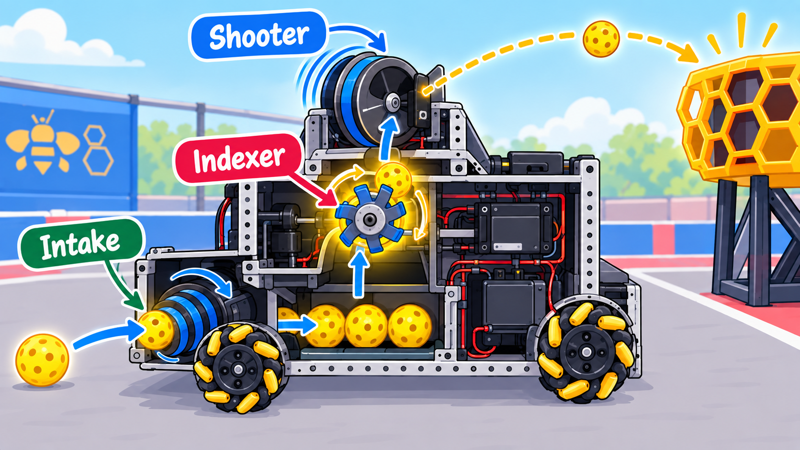
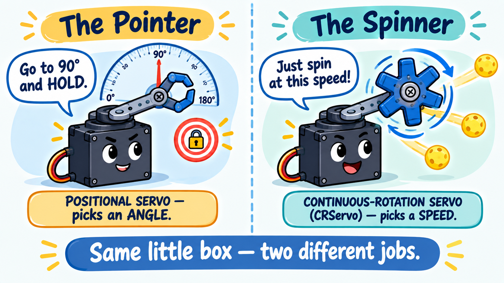
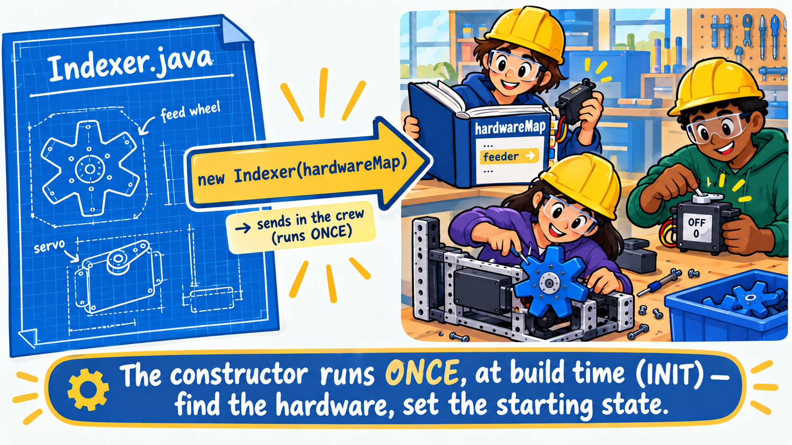
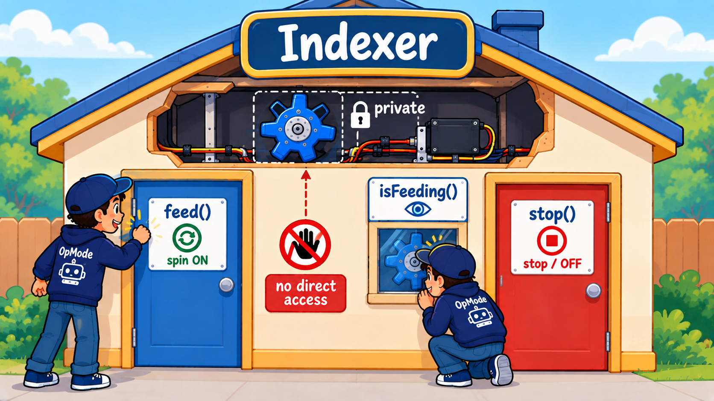

Your robot is a little assembly line for game pieces: the intake pulls pollen in, the storage holds up to four, and soon a spinning flywheel will launch them into the hive. But something has to push a stored piece up into the flywheel, one at a time, only when you say so. That's the indexer — a small feed wheel that spins while you hold the fire button and stops when you let go. It's the trigger of your whole scoring mechanism.

You'll build it as a subsystem with the same parts as the intake: a field that remembers the state, a
constructor that finds the hardware, command methods, and an update() that moves the hardware. Here's the
plan:
| Part | File | What you'll type |
|---|---|---|
| A | Indexer.java | one true/false field: are we feeding? |
| B | Indexer.java | the constructor: find the feeder servo |
| C | Indexer.java | the commands: feed(), stop(), isFeeding() |
| D | Indexer.java | update(): turn the flag into servo power |
| E | Robot.java | add the indexer to the robot |
| F | MecanumDrive.java | hold X to feed |
A new file, Indexer.java, just appeared in your package. Its import, the FEED_POWER constant,
and an empty feeder field are already there for you.
The intake had three states (forward, off, reverse), so it needed an enum. The indexer
only ever does two things: it's feeding or it's not. When there are just two
states, one true/false field says it all. It starts false — a robot should never
boot up feeding.
Indexer.java⩢ Copyprivate boolean feeding = false; // start stoppedEvery subsystem so far came with its constructor already written. This one is short, so this time you write it yourself.
▸ Indexer.java : Indexer : ConstructorIndexer.java⩢ Copypublic Indexer(HardwareMap hardwareMap) {
feeder = hardwareMap.get(CRServo.class, "feeder");
feeder.setPower(0.0);
}CRServo?The intake used a DcMotor. The indexer uses a CRServo — a
continuous-rotation servo. Servos come with two different personalities, even though they look almost the
same:

CRServo) doesn't care about angle. You give it a speed and it turns,
like a tiny motor — exactly what a feed wheel needs.Good news: you drive a CRServo with the same setPower() you know from motors —
1.0 is full speed, 0.0 is stop. The only difference in code is the type you ask the
hardware map for: CRServo.class instead of DcMotor.class.
public Indexer(HardwareMap hardwareMap) — you can spot a constructor instantly: it
has the same name as the class and no return type (not even void). The
hardwareMap in the parentheses is the robot's "phone book" of every motor, servo, and sensor, handed in
so the constructor can look devices up.feeder = hardwareMap.get(CRServo.class, "feeder"); — look up the device named
"feeder" (its name in the Driver Hub configuration) and store it in our field. Now the empty
feeder field is a real, usable servo.feeder.setPower(0.0); — start it stopped, so the robot never boots up with the
feeder spinning.
The constructor runs once, during INIT: find the hardware, set it up. update()
runs every loop, about 50 times a second, to act. You look a device up once — not 50 times a
second — and then just use it in update(). (You'll write the line that runs this constructor in
Part E.)
Now give the rest of your program a way to ask the indexer to do things. You need exactly three methods: start feeding, stop feeding, and "are you feeding right now?"
▸ Indexer.java : Indexer : CommandsIndexer.java⩢ Copy/** Start feeding pieces out. Only changes the flag -- update() moves the servo. */
public void feed() {
feeding = true;
}
/** Stop feeding. */
public void stop() {
feeding = false;
}
/** Lets the OpMode read whether the indexer is running -- to show it, or to gate a shot. */
public boolean isFeeding() {
return feeding;
}Notice what these don't do: none of them touches the feeder servo. They only flip the
feeding flag (or report it). update() in Part D is the only place that moves hardware —
the same "decide here, do there" shape as the intake.
Remember the subsystem-as-a-house idea from From Messy Loop to Clean Class? The feeder servo
is private — wiring sealed inside the walls. The only ways in are the public doors
feed() and stop(), and the peek-window isFeeding(). So if the indexer ever
misbehaves, there's one file to look in, not your whole program.

feeder stays private. The OpMode can only use the public doors
feed() and stop(), or peek through the isFeeding() window.update(): turn the flag into servo powerThe scheduler calls update() every loop. Its job: full power while feeding, zero when stopped. You
could write that as an if/else:
if (feeding) {
feeder.setPower(FEED_POWER);
} else {
feeder.setPower(0.0);
}Java has a one-line shortcut for "pick one of two values," called a ternary. This line means exactly the same thing as the five lines above:
▸ Indexer.java : Indexer : Apply StateIndexer.java⩢ Copyfeeder.setPower(feeding ? FEED_POWER : 0.0);? :Read it like a question: feeding ? asks "is feeding true?" If yes, you get the
value before the : (FEED_POWER). If no, you get the value after it
(0.0).
The indexer is built, but the robot doesn't know about it yet. Open Robot.java and make the same two
small edits you made for the intake.
Robot.java⩢ Copypublic final Indexer indexer; // the feed wheel that pushes stored pieces outRobot.java⩢ Copyindexer = new Indexer(hardwareMap); // build it -- the constructor finds "feeder" in the config
subsystems.add(indexer); // register it so robot.update() calls indexer.update() every loopnew Indexer(hardwareMap) is the line that runs the constructor you wrote in Part B
— the new keyword sends in the construction crew. It runs once, during INIT.subsystems.add(indexer) is what makes robot.update() call your indexer's
update() every loop. Forget it, and the servo never moves.Last step: the gamepad. Feeding is a hold, not a toggle — feed while X is down, stop the instant it's up. So, unlike the intake's A button, there's no edge detection and no memory field: just check the button every loop.
▸ MecanumDrive.java : Indexer : LoopMecanumDrive.java⩢ Copy// Hold X to feed pieces out. No edge detection needed -- feeding is simply ON while held.
if (gamepad1.x) robot.indexer.feed();
else robot.indexer.stop();Edge detection is for toggles — "one tap flips a setting" — where reacting on all 15–20 loops of a
held press would flip it back and forth. Feeding is a hold: we want it on for every loop X is down.
So a plain if (gamepad1.x) is exactly right.
Your robot starts a match pre-loaded with pollen. Build, Init, and Start, then hold X (the X key on your keyboard works too). The feeder spins and the stored pollen rolls out the front of the robot, one flick at a time. Let go and it stops.
Your robot has no shooter yet, so the pieces just dribble out the front. The indexer is doing its whole job — there's just nothing above it to grab them. Next lesson you'll add the flywheel, which catches each fed piece and launches it across the field. The indexer is the trigger; the flywheel is the cannon.